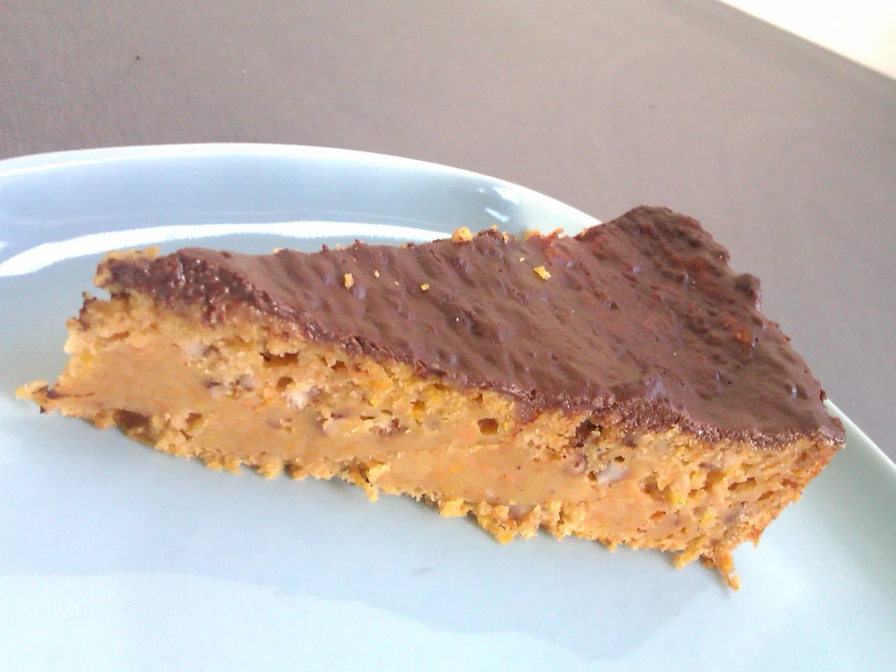

Naribati mrkvu što sitnije i dodati naribanu koru naranče. Iscijediti sok naranče i pomiješati ga s uljem i šećerom.
U drugoj zdjeli pomiješati brašno, prašak za pecivo i cimet. Dodati nasjeckane orahe.
Suhu smjesu dodati u tekuću, zatim postupno dodavati mrkvu. Po potrebi dodati malo sojinog mlijeka.
Peći u pećnici na 180°C oko 40 minuta.
Za preljev pomiješati kakao, šećer, ulje i sojino mlijeko te kuhati 2-3 minute dok se ne zgusne.
Preliti kolač i ostaviti u hladnjaku nekoliko sati (ili preko noći) prije posluživanja.